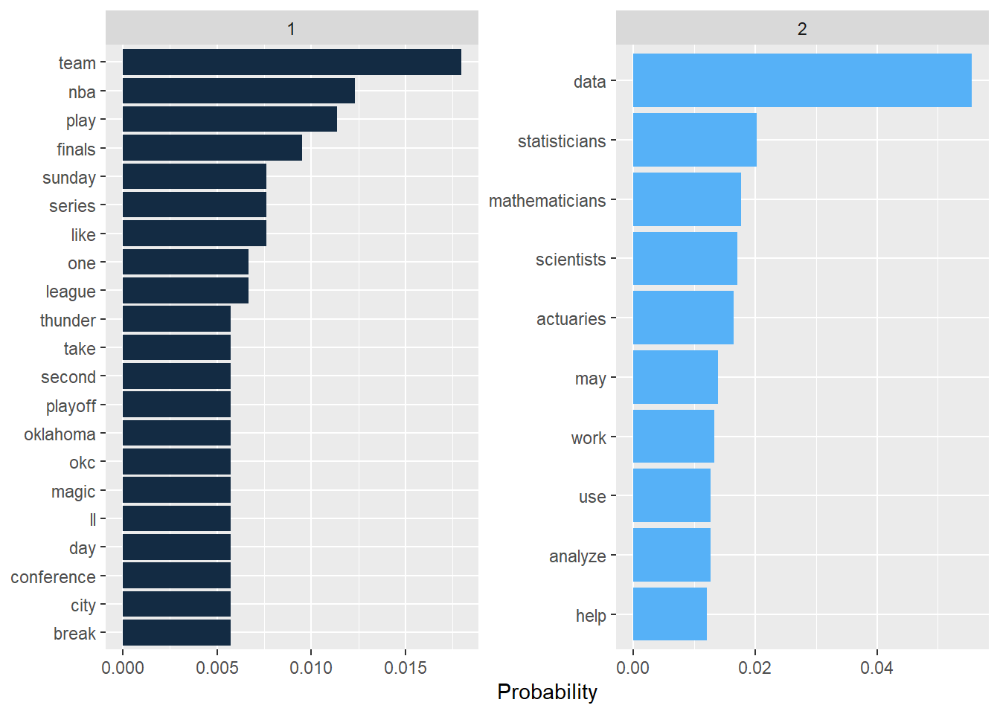
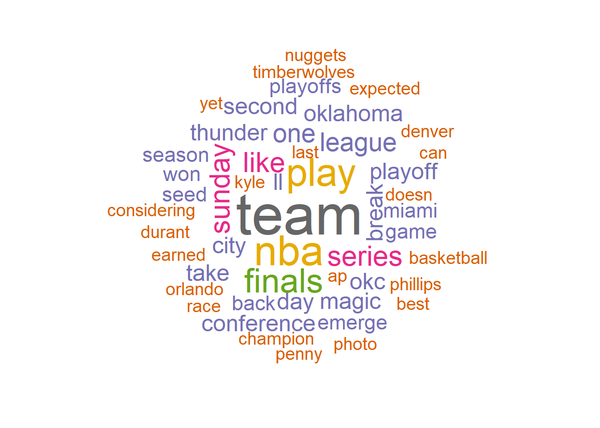
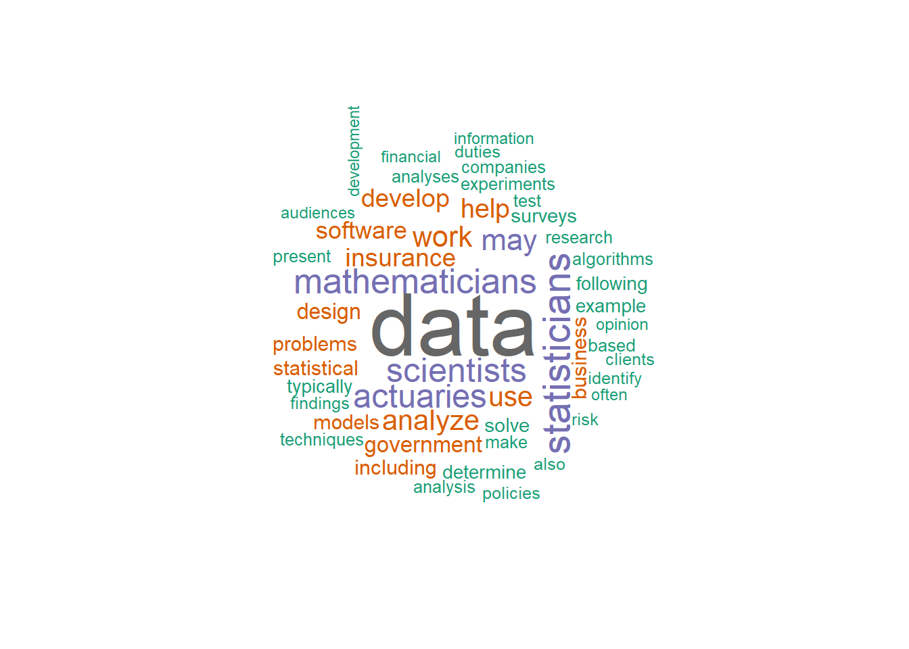
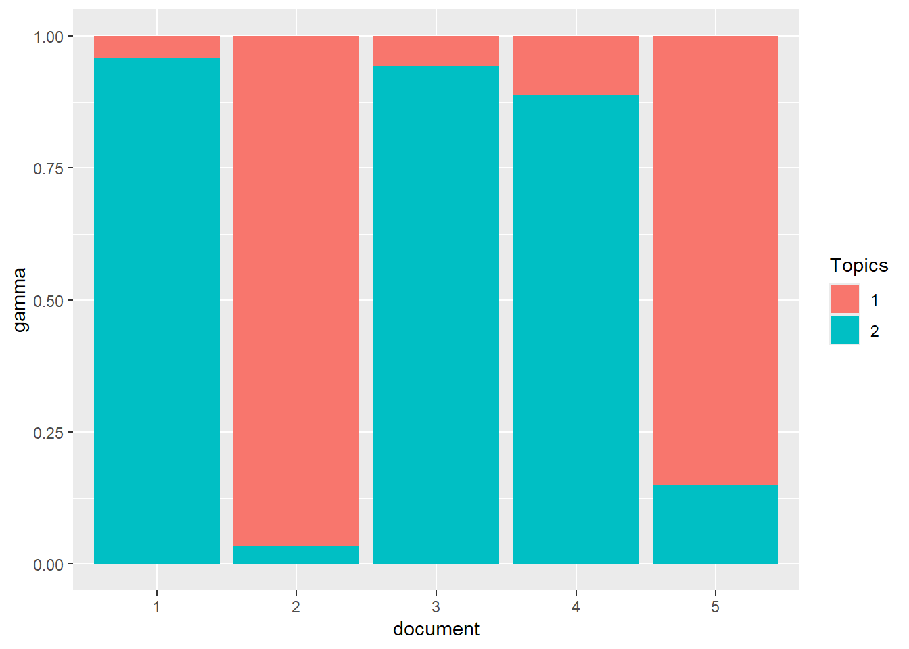

library(tidyverse)
library(tidytext)
library(tm)
library(wordcloud)
# 1 https://sports.yahoo.com/nba-playoffs-the-season-finale-delivered-setting-the-stage-for-more-drama-and-star-power-032312737.html?
# 2 https://www.bls.gov/ooh/math/mathematicians-and-statisticians.htm#tab-2
# 3: https://www.bls.gov/ooh/math/data-scientists.htm#tab-2
# 4: https://www.bls.gov/ooh/math/actuaries.htm#tab-2
# 5: https://www.cbssports.com/nba/news/2024-nba-playoffs-predictions-picks-for-entire-postseason-bracket-with-experts-eyeing-celtics-nuggets-finals/
df <- read_csv("topic_model.csv")Text Mining - Topic Modeling
In this notebook, we will demonstrate how Latent Dirichlet Allocation (LDA) is used for topic modeling.
Import the dataset
The dataset is manually created using the data from the Internet. The dataset has 5 rows where each row presents an article on a topic. The dataset has totally two topics: NBA and mathematics/statistics jobs.
The dataset can be downloaded at
Create the Document - Term Matrix (DTM)
Topic Modeling using LDA will work with the DTM matrix where the entries are term frequency. So we first calculate this matrix.
# create the DTM
df_tm <- df %>%
unnest_tokens(output = word, input = texts) %>%
anti_join(get_stopwords()) %>%
anti_join(tibble(word = c(letters, LETTERS, "oh", 'just', 've', as.character(c(1:100)))))
word_freq <- df_tm %>%
group_by(document) %>% count(word, sort = TRUE)
df_dtm <- word_freq %>%
cast_dtm(document = document, term = word, n)
tm::inspect(df_dtm)<<DocumentTermMatrix (documents: 5, terms: 857)>>
Non-/sparse entries: 1033/3252
Sparsity : 76%
Maximal term length: 16
Weighting : term frequency (tf)
Sample :
Terms
Docs actuaries analyze data help mathematicians may scientists statisticians
1 0 14 40 12 28 12 4 32
2 0 0 0 0 0 0 0 0
3 0 4 46 0 0 6 22 0
4 26 2 2 7 0 3 1 0
5 0 0 0 0 0 1 0 0
Terms
Docs use work
1 6 12
2 0 0
3 10 2
4 4 7
5 0 0Perform Topic Modeling
Once we have the DTM matrix, we can run LDA. We will use the package
topicmodels. If you have not installed the package, useinstall.packages('topicmodels')to install it.The trickiest part of topic modeling is to identify the number of topics. For simplicity we will assume that there are two topics in the entire dataset.
library(topicmodels)
# Perform Topic Modeling
n_topics = 2 # set the number of topics
lda_out <-
LDA(df_dtm, k = n_topics, method = 'Gibbs',
control = list(seed = 1111))Presenting the Results
- Words in each topics
lda_topics <- lda_out %>%
tidy(matrix = "beta")
word_probs <- lda_topics %>%
group_by(topic) %>%
slice_max(order_by = beta, n = 10) %>%
ungroup() %>%
mutate(term = fct_reorder(term, beta))
# bar chart
word_probs %>%
ggplot(aes(beta, term, fill = topic)) +
geom_col(show.legend = FALSE) +
facet_wrap(~ as.factor(topic), scales = "free") +
labs(x = "Probability",
y = NULL)+
scale_y_reordered() 
# word cloud
library(wordcloud)
pal <- brewer.pal(8,"Dark2")
for (i in c(1:n_topics))
{
topic <- lda_topics %>%
group_by(topic) %>%
filter(topic==i)
topic %>%
with(wordcloud(term, beta, random.order = FALSE,
max.words = 50, colors=pal))
}

- Topics Distribution for each document
# topic distribution for each documents
lda_documents = lda_out %>%
tidy(matrix = "gamma")
lda_documents %>%
ggplot() +
geom_col(aes(x = document, y = gamma, fill = factor(topic)))+
labs(fill = 'Topics')
From the visualization of the results, we observe here that LDA did a very good job identify the two topics of NBA and mathematics/statistics jobs.